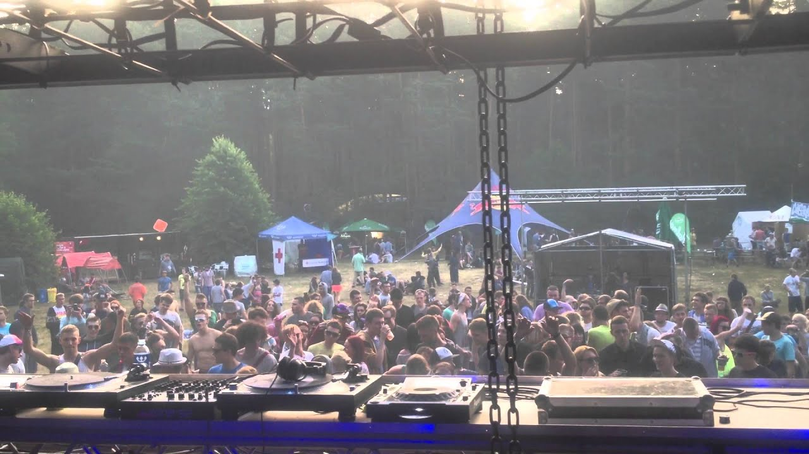

Paulius Litinskas
Junior UX designer
During the summer of 2017 and 2018, I got the opportunity to work as a security guard at a couple of Techno music festivals, such as “Sūpynės“ , „Mėnuo Juodaragis“ , „Tundra“ . During my work there, I had to do a lot of different tasks, depending on the area I was supervising. For example, during the opening days of the festival, I got the opportunity to work by the gate, and check if people are trying to bring in alcohol into the festival territory. The job was easier than the first one, but it was really mentally draining, when you cannot sleep for 48 hours, because you have to supervise certain areas during the night, and early morning you have another area where you have to be.